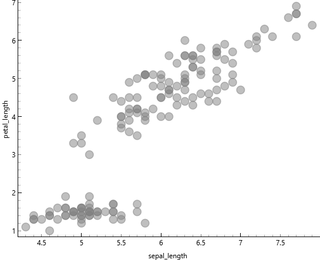
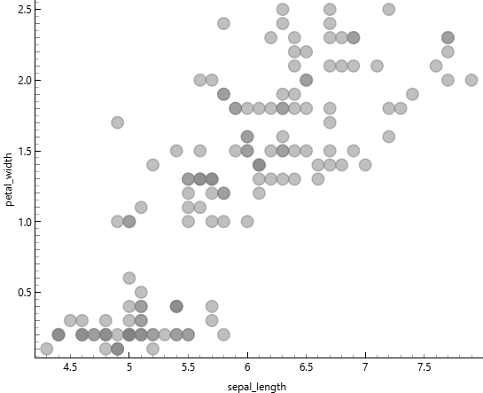
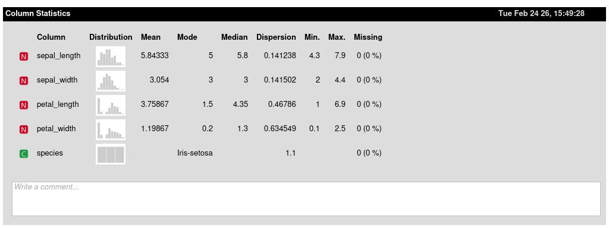
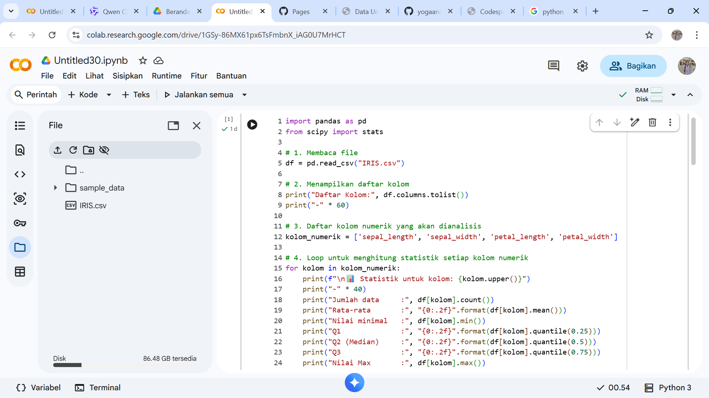
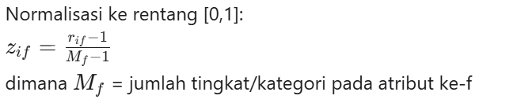
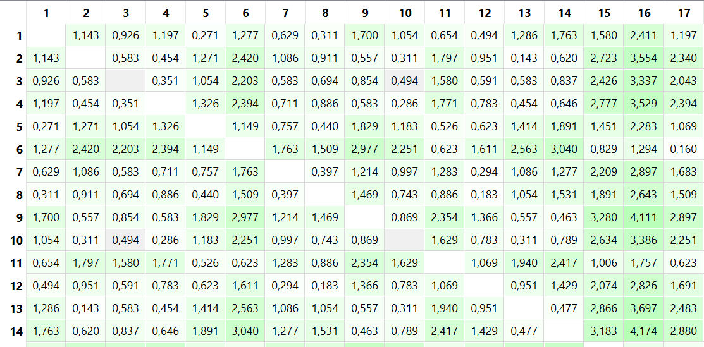
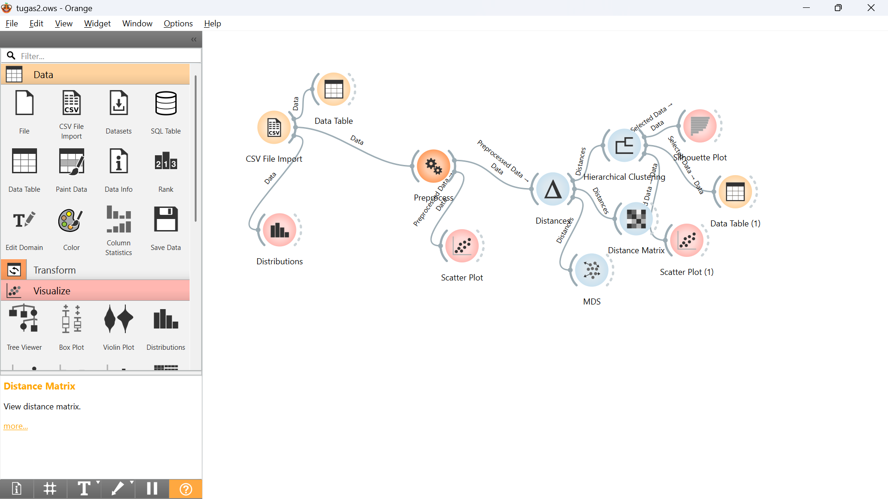

Data Understanding#
Data Understanding bertujuan untuk memahami kondisi, struktur, kualitas, dan potensi dataset sebelum dilakukan pemodelan. Data merupakan representasi dari realitas bisnis. Oleh karena itu, pemahaman terhadap data berarti memahami perilaku sistem atau pelanggan yang direpresentasikan.
2.1 Identifikasi dan Integrasi Sumber Data#
Data dapat berasal dari berbagai sistem: Sistem transaksi Data pelanggan Log aktivitas pengguna Sistem keuangan Data eksternal seperti demografi atau pasar Pada tahap ini dilakukan identifikasi: Format data Periode waktu Volume data Konsistensi antar sumber Integrasi data sering menjadi tantangan karena perbedaan struktur dan format.
2.2 Eksplorasi Statistik dan Visualisasi#
Eksplorasi data dilakukan untuk memahami karakteristik statistik dataset, seperti: Rata-rata dan median Distribusi nilai Variansi Korelasi antar variabel Visualisasi membantu mengidentifikasi pola yang tidak terlihat secara numerik, seperti: Distribusi tidak normal Hubungan non-linear Pola musiman Misalnya, dalam analisis penjualan, dapat ditemukan bahwa transaksi meningkat tajam pada akhir bulan atau saat promosi tertentu.
2.3 Analisis Kualitas Data#
Kualitas data sangat memengaruhi performa model. Beberapa aspek yang dianalisis: Missing values dan pola kemunculannya Duplikasi data Nilai ekstrem Ketidakseimbangan kelas Jika data churn hanya 5% dari total dataset, maka model mungkin cenderung memprediksi semua pelanggan sebagai “tidak churn” untuk mencapai akurasi tinggi. Ini adalah contoh pentingnya memahami distribusi kelas. Tahap Data Understanding memberikan gambaran realistis mengenai kekuatan dan keterbatasan dataset sebelum masuk ke tahap teknis berikutnya.
Eksplorasi/Tugas#
korelasi antara sepal_width dan sepal_length#

Dari gambar di atas menunjukkan korelasi antara sepal_widh dan sepal_length sangat lemah atau tidak ada korelasi, dikarenakan Titik-titik data tersebar tanpa membentuk pola yang jelas, menunjukkan bahwa tidak ada hubungan yang kuat antara sepal length dan sepal width. artinya Kedua variabel ini dapat dianggap sebagai fitur yang berdiri sendiri dan tidak saling mempengaruhi secara linear.
korelasi antara petal_width dan petal_length#

dari gambar di atas menunjukkan korelasi antara petal_width dan petal_length sangat kuat, dikarenakan Titik-titik data membentuk pola yang jelas dari kiri bawah ke kanan atas, menunjukkan bahwa semakin besar nilai petal_length, semakin besar pula nilai petal_width. artinya kedua variabel sangat rapat membentuk pola linear yang jelas. namun terdapat Dua cluster yang terpisah kemungkinan besar merepresentasikan iris yang berbeda, tetapi tidak menyebabkan ambigu.
korelasi antara sepal_length dan petal_length#

Dari gambar di atas menunjukkan korelasi antara sepal_length dan petal_length sangat kuat, dikarenakan titik-titik data membentuk pola yang jelas dari kiri bawah ke kanan atas, menunjukkan bahwa semakin besar nilai sepal_length, semakin besar pula nilai petal_length. Artinya kedua variabel sangat rapat membentuk pola linear yang jelas. Namun terdapat dua cluster yang terpisah kemungkinan besar merepresentasikan iris yang berbeda, tetapi tidak menyebabkan ambigu.
korelasi antara sepal_length dan petal_width#
Dari gambar di atas menunjukkan korelasi antara sepal_length dan petal_width sangat kuat, dikarenakan titik-titik data membentuk pola yang jelas dari kiri bawah ke kanan atas, menunjukkan bahwa semakin besar nilai sepal_length, semakin besar pula nilai petal_width. Artinya kedua variabel sangat rapat membentuk pola linear yang jelas. Namun terdapat dua cluster yang terpisah kemungkinan besar merepresentasikan iris yang berbeda, tetapi tidak menyebabkan ambigu.
korelasi antara sepal_width dan petal_length#

Dari gambar di atas menunjukkan korelasi antara sepal_width dan petal_length cenderung lemah, dikarenakan titik-titik data tidak membentuk pola linear yang konsisten dari kiri bawah ke kanan atas. Terlihat adanya dua cluster yang sangat terpisah secara vertikal, di mana cluster bawah memiliki petal_length rendah dan cluster atas memiliki petal_length tinggi, namun dalam masing-masing cluster tidak ada hubungan yang jelas dengan sepal_width. Artinya kedua variabel tidak menunjukkan pola yang rapat dan penyebaran data relatif acak. Dua cluster yang terpisah ini kemungkinan besar merepresentasikan spesies iris yang berbeda dengan karakteristik yang sangat berbeda, dan pemisahan yang sangat jelas ini tidak menyebabkan ambigu.
korelasi antara sepal_width dan petal_length#

Dari gambar di atas menunjukkan korelasi antara sepal_width dan petal_length cenderung lemah, dikarenakan titik-titik data tidak membentuk pola linear yang konsisten dari kiri bawah ke kanan atas. Terlihat adanya dua cluster yang sangat terpisah secara vertikal, di mana cluster bawah memiliki petal_length rendah dan cluster atas memiliki petal_length tinggi, namun dalam masing-masing cluster tidak ada hubungan yang jelas dengan sepal_width. Artinya kedua variabel tidak menunjukkan pola yang rapat dan penyebaran data relatif acak. Dua cluster yang terpisah ini kemungkinan besar merepresentasikan spesies iris yang berbeda dengan karakteristik yang sangat berbeda, dan pemisahan yang sangat jelas ini tidak menyebabkan ambigu.
korelasi antara sepal_width dan petal_width#

Dari gambar di atas menunjukkan korelasi antara sepal_width dan petal_width lemah atau tidak konsisten, dikarenakan titik-titik data tidak membentuk pola linear yang jelas dari kiri bawah ke kanan atas. Terlihat adanya dua cluster yang sangat terpisah secara vertikal, di mana cluster bawah memiliki petal_width sangat rendah dan cluster atas memiliki petal_width lebih tinggi, namun dalam masing-masing cluster penyebaran data relatif acak tanpa menunjukkan hubungan yang kuat dengan sepal_width. Artinya kedua variabel tidak membentuk pola linear yang rapat dan peningkatan sepal_width tidak diikuti oleh peningkatan petal_width secara konsisten. Dua cluster yang terpisah ini kemungkinan besar merepresentasikan spesies iris yang berbeda, dan pemisahan yang sangat jelas ini tidak menyebabkan ambigu.
statistik deskriptif#

Berdasarkan tabel statistik deskriptif di atas, dataset Iris menunjukkan karakteristik yang menarik untuk setiap variabel pengukuran. Pada sepal_length, nilai rata-rata sebesar 5.84 cm sangat dekat dengan median 5.8 cm, mengindikasikan distribusi data yang relatif simetris dan terkonsentrasi di kisaran 5-6 cm dengan variasi yang kecil. Sementara itu, sepal_width memiliki mean 3.05 cm dengan median dan mode sama-sama bernilai 3 cm, menunjukkan bahwa lebar sepal cenderung homogen antar spesies dengan penyebaran data yang rapat. Berbeda dengan pengukuran sepal, variabel petal_length dan petal_width menunjukkan pola yang lebih kompleks. Nilai mode pada petal_length (1.5 cm) dan petal_width (0.2 cm) sangat berbeda dengan median masing-masing (4.35 cm dan 1.3 cm), yang mengindikasikan adanya distribusi bimodal atau dua kelompok data yang terpisah jelas. Hal ini diperkuat oleh nilai dispersi yang lebih tinggi pada petal_width (0.63) dibandingkan variabel lainnya, menunjukkan bahwa pengukuran petal memiliki variabilitas yang lebih besar dan lebih efektif untuk membedakan antar spesies.
python (google colab)#
bukti screenshot

link program#
https://colab.research.google.com/drive/1xl65AHBp9bWO_wA2mRbTdoj_e6VPWey1?usp=sharing
kode lengkap#
import pandas as pd
from scipy import stats
df = pd.read_csv("IRIS.csv")
print("Daftar Kolom:", df.columns.tolist())
print("-" * 60)
kolom_numerik = ['sepal_length', 'sepal_width', 'petal_length', 'petal_width']
for kolom in kolom_numerik:
print(f"\n Statistik untuk kolom: {kolom.upper()}")
print("-" * 40)
print("Jumlah data :", df[kolom].count())
print("Rata-rata :", "{0:.2f}".format(df[kolom].mean()))
print("Nilai minimal :", df[kolom].min())
print("Q1 :", "{0:.2f}".format(df[kolom].quantile(0.25)))
print("Q2 (Median) :", "{0:.2f}".format(df[kolom].quantile(0.5)))
print("Q3 :", "{0:.2f}".format(df[kolom].quantile(0.75)))
print("Nilai Max :", df[kolom].max())
print("Kemencengan 1 :", "{0:.2f}".format(round(df[kolom].skew(), 2)))
print("Kemencengan 2 :", "{0:.6f}".format(round(df[kolom].skew(), 6)))
print("Standar Deviasi :", "{0:.2f}".format(round(df[kolom].std(), 2)))
print("Variansi :", "{0:.2f}".format(round(df[kolom].var(), 2)))
mode_result = stats.mode(df[kolom].dropna(), keepdims=True)
if len(mode_result.mode) > 0 and not pd.isna(mode_result.mode[0]):
print("Nilai modus : {} dengan frekuensi {}".format(
mode_result.mode[0], mode_result.count[0]))
else:
print("Nilai modus : Tidak ada modus tunggal")
print(f"\n🌸 Statistik untuk kolom: SPECIES")
print("-" * 40)
print("Jumlah data :", df['species'].count())
print("Jumlah unik :", df['species'].nunique())
print("Nilai unik :", df['species'].unique().tolist())
print("\nDistribusi frekuensi:")
print(df['species'].value_counts())
print("\nModus (kategori paling sering):", df['species'].mode().values[0])
output#
‘’’ text Daftar Kolom: [‘sepal_length’, ‘sepal_width’, ‘petal_length’, ‘petal_width’, ‘species’]#
Statistik untuk kolom: SEPAL_LENGTH#
Jumlah data : 150 Rata-rata : 5.84 Nilai minimal : 4.3 Q1 : 5.10 Q2 (Median) : 5.80 Q3 : 6.40 Nilai Max : 7.9 Kemencengan 1 : 0.31 Kemencengan 2 : 0.314911 Standar Deviasi : 0.83 Variansi : 0.69 Nilai modus : 5.0 dengan frekuensi 10
Statistik untuk kolom: SEPAL_WIDTH#
Jumlah data : 150 Rata-rata : 3.05 Nilai minimal : 2.0 Q1 : 2.80 Q2 (Median) : 3.00 Q3 : 3.30 Nilai Max : 4.4 Kemencengan 1 : 0.33 Kemencengan 2 : 0.334053 Standar Deviasi : 0.43 Variansi : 0.19 Nilai modus : 3.0 dengan frekuensi 26
Statistik untuk kolom: PETAL_LENGTH#
Jumlah data : 150 Rata-rata : 3.76 Nilai minimal : 1.0 Q1 : 1.60 Q2 (Median) : 4.35 Q3 : 5.10 Nilai Max : 6.9 Kemencengan 1 : -0.27 Kemencengan 2 : -0.274464 Standar Deviasi : 1.76 Variansi : 3.11 Nilai modus : 1.5 dengan frekuensi 14
Statistik untuk kolom: PETAL_WIDTH#
Jumlah data : 150 Rata-rata : 1.20 Nilai minimal : 0.1 Q1 : 0.30 Q2 (Median) : 1.30 Q3 : 1.80 Nilai Max : 2.5 Kemencengan 1 : -0.10 Kemencengan 2 : -0.104997 Standar Deviasi : 0.76 Variansi : 0.58 Nilai modus : 0.2 dengan frekuensi 28
🌸 Statistik untuk kolom: SPECIES#
Jumlah data : 150 Jumlah unik : 3 Nilai unik : [‘Iris-setosa’, ‘Iris-versicolor’, ‘Iris-virginica’]
Distribusi frekuensi: species Iris-setosa 50 Iris-versicolor 50 Iris-virginica 50 Name: count, dtype: int64
Modus (kategori paling sering): Iris-setosa ‘’’
penjelasan mengukur Jarak dengan tipe data campuran#
Latar Belakang#
Dalam praktik nyata, database yang digunakan untuk analisis data sering kali tidak hanya mengandung satu jenis tipe data saja, melainkan berbagai tipe data yang tercampur menjadi satu kesatuan. Sebagai contoh, sebuah dataset dapat memuat atribut nominal seperti warna atau jenis produk, atribut binary simetris seperti jenis kelamin, atribut binary asimetris seperti hasil tes medis yang bernilai Y/N, atribut numerik berupa data interval atau rasio seperti suhu atau pendapatan, serta atribut ordinal yang memiliki tingkatan atau peringkat seperti level kepuasan atau tingkat pendidikan. Karena setiap tipe data tersebut memiliki karakteristik dan cara pengukuran yang berbeda-beda, kita tidak dapat menerapkan satu rumus jarak secara langsung untuk menghitung kemiripan atau perbedaan antar objek. Sebagai solusi, pendekatan yang dapat digunakan adalah metode pembobotan, yaitu dengan menghitung jarak untuk setiap atribut secara terpisah sesuai dengan tipe datanya, kemudian menggabungkan seluruh hasil perhitungan tersebut menggunakan rumus jarak campuran yang memperhitungkan indikator validitas setiap atribut. Dengan pendekatan ini, seluruh jenis atribut dapat berkontribusi secara proporsional dalam perhitungan jarak akhir, sehingga hasil analisis menjadi lebih akurat dan mencerminkan karakteristik data yang sebenarnya.
Rumus mengukur jarak data campuran#

Keterangan:
simbol penjelasan d(i,j) Jarak antara objek i dan j p umlah total atribut δ ij (f) Indikator: 1 jika atribut ke-f valid untuk dibandingkan, 0 jika tidak (misal: data missing) d ij (f) Jarak untuk atribut ke-f saja Cara Menghitung d(f)ij per Tipe Atribut
1. Atribut Nominal atau Binary#
ij(f) = 0, jika xif = xjf (nilai sama)
dij(f) = 1, jika xif ≠ xjf (nilai berbeda)
cara penghitungannya Menggunakan metode simple matching.
2. Atribut Numerik#
Lakukan normalisasi terlebih dahulu agar skala seragam, misalnya dengan:

Mean Absolute Deviation: lebih robust terhadap outlier
Setelah dinormalisasi, hitung jarak dengan metode numerik (Euclidean, Manhattan, dll).
Atribut Ordinal#
Langkah-langkah:
Ganti nilai dengan ranking r i f (misal: rendah=1, sedang=2, tinggi=3)

Hitung jarak menggunakan metode numerik pada nilai z i f
analisis mengunakan orange data mining untuk data yang campuran#
contoh data saya untuk menganalisis penghitungan jarak di orange

Widget Distances digunakan untuk menghitung matriks dissimilarity (jarak) antar objek dalam dataset. arameter Compare diset ke Rows yang berarti perhitungan jarak dilakukan antar objek/data point (baris dalam dataset), bukan antar atribut. Hal ini sesuai dengan konsep matriks dissimilarity, dimana matriks segitiga dihasilkan dari perhitungan jarak antar n titik data. Metric jarak yang dipilih adalah Manhattan (normalized) karena data yang saya pakai memiliki data campuran

Gambar tersebut menampilkan Matriks Dissimilarity (Distance Matrix) yang dihasilkan melalui widget Distance Matrix pada Orange Data Mining. matriks ini berbentuk segitiga (single mode) yang memuat data jarak antar n titik data. Struktur matriks ini bersifat simetris, dimana jarak antara objek i ke objek j sama dengan jarak objek j ke objek i atau d(i,j) = d(j,i), dan memiliki nilai diagonal nol yang menunjukkan jarak objek terhadap dirinya sendiri. nilai dissimilarity dalam matriks ini merupakan ukuran numerik dari perbedaan dua objek data. Interpretasi nilai jarak mengikuti prinsip dimana nilai yang sangat rendah menunjukkan benda yang lebih mirip, sedangkan nilai yang tinggi menunjukkan perbedaan yang besar. Hal ini terlihat jelas pada data pelanggan dalam matriks. Sebagai contoh, jarak antara customer 7590-VHVEG dan 5575-GNVDE adalah 2,074, yang menunjukkan tingkat perbedaan sedang. Namun, customer 7590-VHVEG memiliki nilai jarak yang lebih kecil yaitu 0,554 terhadap customer 3668-QPYBK, yang mengindikasikan bahwa kedua customer tersebut memiliki karakteristik yang sangat mirip. Sebaliknya, perbedaan yang signifikan terlihat pada pasangan customer 8091-TTVAX dan 3668-QPYBK yang memiliki nilai jarak sebesar 4,519. Nilai yang besar ini menandakan bahwa kedua objek tersebut sangat berbeda secara karakteristik. Secara keseluruhan, matriks ini memenuhi sifat-sifat jarak yaitu positive definiteness (nilai > 0 untuk objek berbeda), symmetry, dan triangle inequality. Hasil matriks dissimilarity ini menjadi dasar utama untuk tahapan selanjutnya yaitu Hierarchical Clustering dalam mengelompokkan pelanggan berdasarkan kemiripan karakteristiknya.


Berdasarkan dendrogram, hierarchical clustering dilakukan dengan metode linkage Ward dan menghasilkan 4 cluster optimal. Pemotongan dendrogram dilakukan pada ketinggian tertentu sehingga diperoleh:
Cluster 1: sejumlah X customer, Cluster 2: sejumlah X customer, Cluster 3: sejumlah X customer, Cluster 4: sejumlah X customer,
Metode Ward linkage dipilih karena mampu menghasilkan cluster yang lebih kompak dengan meminimalkan varians dalam setiap cluster.
implementasikan data iris untuk mengukur jara di orange#

gambar diatas merupakan sebagian data mentah dari iris untuk diimplementasikan dalam menghitung jarak

gambar di atas merupakan hasil dari menghitung jarak pada data iris dimana prosesnya sama dengan yang tadi

gambar di atas merupakan visualiasi pengukuran jarak pada orange, tetapi sementara saya menggunakan widget csv file impor untuk mengimpor data iris bukan menggunakan sql table karena widget tersebut masih ada erornya atau tidak bisa di pakai dan belum menemukan solusinya
Proyek: Missing Values Imputation + Normalisasi Data#
Dataset: Telco Customer Churn#
1. Missing Values — Imputasi dengan WKNN (Weighted K-Nearest Neighbor)#
1.1 Identifikasi Missing Values#
Dataset Telco Customer Churn memiliki 7.043 baris dan 21 kolom. Kolom TotalCharges bertipe string karena terdapat nilai kosong (spasi) yang tidak terdeteksi secara otomatis. Setelah konversi ke numerik menggunakan pd.to_numeric(..., errors='coerce'), ditemukan 11 missing values pada kolom TotalCharges.
import pandas as pd
import numpy as np
df = pd.read_csv("Telco-Customer-Churn.csv")
df['TotalCharges'] = pd.to_numeric(df['TotalCharges'], errors='coerce')
print("Jumlah missing values per kolom:")
print(df.isnull().sum()[df.isnull().sum() > 0])
Output:
TotalCharges 11
dtype: int64
Data baris yang mengandung missing values:
customerID |
tenure |
MonthlyCharges |
TotalCharges |
|---|---|---|---|
4472-LVYGI |
0 |
52.55 |
NaN |
3115-CZMZD |
0 |
20.25 |
NaN |
5709-LVOEQ |
0 |
80.85 |
NaN |
4367-NUYAO |
0 |
25.75 |
NaN |
1371-DWPAZ |
0 |
56.05 |
NaN |
7644-OMVMY |
0 |
19.85 |
NaN |
3213-VVOLG |
0 |
25.35 |
NaN |
2520-SGTTA |
0 |
20.00 |
NaN |
2923-ARZLG |
0 |
19.70 |
NaN |
4075-WKNIU |
0 |
73.35 |
NaN |
2775-SEFEE |
0 |
61.90 |
NaN |
Catatan: Semua baris missing memiliki
tenure = 0, artinya pelanggan baru yang belum memiliki riwayat pembayaran total.
1.2 Konsep WKNN (Weighted K-Nearest Neighbor Imputation)#
WKNN adalah metode imputasi yang mencari K data terdekat (tetangga) dari data yang memiliki nilai lengkap, lalu menggunakan rata-rata berbobot untuk mengisi nilai yang hilang. Bobot setiap tetangga berbanding terbalik dengan jaraknya — semakin dekat jaraknya, semakin besar bobotnya.
Rumus Jarak Euclidean (ternormalisasi):
Rumus Bobot:
Nilai \(\epsilon\) (epsilon) sangat kecil (mis. \(10^{-10}\)) untuk menghindari pembagian dengan nol jika jarak = 0.
Rumus Nilai Imputasi:
1.3 Penyelesaian Manual WKNN (Contoh: customerID = 4472-LVYGI)#
Data query (yang akan diimputasi):
tenure= 0MonthlyCharges= 52.55TotalCharges= NaN ← akan diisi
Langkah 1 — Normalisasi Min-Max pada fitur tenure dan MonthlyCharges:
Dari seluruh data bersih (7.032 baris):
tenure: min = 0, max = 72MonthlyCharges: min = 18.25, max = 118.75
Vektor query ternormalisasi: \(q = (0.0,\ 0.3413)\)
Langkah 2 — Hitung jarak Euclidean ke semua data bersih, ambil K=5 terdekat:
# |
customerID |
tenure |
MonthlyCharges |
TotalCharges |
Jarak (\(d\)) |
|---|---|---|---|---|---|
1 |
4678-DVQEO |
1 |
52.20 |
52.20 |
0.014509 |
2 |
2386-LAHRK |
1 |
53.50 |
53.50 |
0.016963 |
3 |
4929-BSTRX |
1 |
53.55 |
53.55 |
0.017245 |
4 |
9108-EJFJP |
1 |
53.55 |
53.55 |
0.017245 |
5 |
9564-KCLHR |
1 |
51.25 |
51.25 |
0.019123 |
Langkah 3 — Hitung bobot \(w_i = \frac{1}{d_i}\):
Langkah 4 — Hitung nilai imputasi:
Hasil: Nilai
TotalChargesuntuk customerID4472-LVYGIdiisi dengan 52.82
1.4 Code Lengkap WKNN (Manual + Full Imputation)#
import pandas as pd
import numpy as np
from sklearn.preprocessing import MinMaxScaler
# ── 1. Load data ──────────────────────────────────────────────────────────────
df = pd.read_csv("Telco-Customer-Churn.csv")
df['TotalCharges'] = pd.to_numeric(df['TotalCharges'], errors='coerce')
print(f"Jumlah missing values sebelum imputasi: {df['TotalCharges'].isnull().sum()}")
# ── 2. Pisahkan data lengkap dan data missing ─────────────────────────────────
features = ['tenure', 'MonthlyCharges'] # Fitur untuk menghitung jarak
target_col = 'TotalCharges' # Kolom yang akan diimputasi
data_clean = df.dropna(subset=[target_col]).copy()
data_missing = df[df[target_col].isnull()].copy()
# ── 3. Normalisasi Min-Max pada fitur ─────────────────────────────────────────
scaler = MinMaxScaler()
clean_scaled = scaler.fit_transform(data_clean[features])
missing_scaled = scaler.transform(data_missing[features])
# ── 4. Fungsi WKNN ────────────────────────────────────────────────────────────
def wknn_impute(query_vec, clean_scaled, clean_target, k=5):
"""
Menghitung nilai imputasi menggunakan WKNN.
Parameters
----------
query_vec : array, vektor fitur ternormalisasi dari data missing
clean_scaled : array, matriks fitur ternormalisasi dari data bersih
clean_target : array, nilai target (TotalCharges) dari data bersih
k : int, jumlah tetangga terdekat
Returns
-------
float : nilai imputasi hasil rata-rata berbobot
"""
# Hitung jarak Euclidean ke semua data bersih
distances = np.sqrt(np.sum((clean_scaled - query_vec) ** 2, axis=1))
# Ambil K tetangga terdekat
nearest_idx = np.argsort(distances)[:k]
nearest_dist = distances[nearest_idx]
nearest_vals = clean_target[nearest_idx]
# Hitung bobot: w = 1 / (d + epsilon)
epsilon = 1e-10
weights = 1.0 / (nearest_dist + epsilon)
# Rata-rata berbobot
imputed_value = np.sum(weights * nearest_vals) / np.sum(weights)
return round(imputed_value, 4)
# ── 5. Lakukan imputasi untuk semua baris missing ─────────────────────────────
clean_target = data_clean[target_col].values
print("\n=== Proses Imputasi WKNN (K=5) ===")
for i in range(len(data_missing)):
query_vec = missing_scaled[i]
imputed_value = wknn_impute(query_vec, clean_scaled, clean_target, k=5)
row_index = data_missing.index[i]
print(f"customerID: {data_missing.iloc[i]['customerID']:<15} | "
f"tenure: {data_missing.iloc[i]['tenure']:>3} | "
f"MonthlyCharges: {data_missing.iloc[i]['MonthlyCharges']:>7.2f} | "
f"TotalCharges (imputasi): {imputed_value}")
df.loc[row_index, target_col] = imputed_value
print(f"\nJumlah missing values setelah imputasi: {df[target_col].isnull().sum()}")
print("\nDataset siap digunakan ✅")
Output:
Jumlah missing values sebelum imputasi: 11
=== Proses Imputasi WKNN (K=5) ===
customerID: 4472-LVYGI | tenure: 0 | MonthlyCharges: 52.55 | TotalCharges (imputasi): 52.8197
customerID: 3115-CZMZD | tenure: 0 | MonthlyCharges: 20.25 | TotalCharges (imputasi): 19.9400
customerID: 5709-LVOEQ | tenure: 0 | MonthlyCharges: 80.85 | TotalCharges (imputasi): 80.3500
customerID: 4367-NUYAO | tenure: 0 | MonthlyCharges: 25.75 | TotalCharges (imputasi): 25.6960
customerID: 1371-DWPAZ | tenure: 0 | MonthlyCharges: 56.05 | TotalCharges (imputasi): 56.0500
customerID: 7644-OMVMY | tenure: 0 | MonthlyCharges: 19.85 | TotalCharges (imputasi): 19.8500
customerID: 3213-VVOLG | tenure: 0 | MonthlyCharges: 25.35 | TotalCharges (imputasi): 25.4367
customerID: 2520-SGTTA | tenure: 0 | MonthlyCharges: 20.00 | TotalCharges (imputasi): 20.0000
customerID: 2923-ARZLG | tenure: 0 | MonthlyCharges: 19.70 | TotalCharges (imputasi): 19.7000
customerID: 4075-WKNIU | tenure: 0 | MonthlyCharges: 73.35 | TotalCharges (imputasi): 73.5500
customerID: 2775-SEFEE | tenure: 0 | MonthlyCharges: 61.90 | TotalCharges (imputasi): 61.9000
Jumlah missing values setelah imputasi: 0
Dataset siap digunakan ✅
2. Normalisasi Data#
2.1 Pengertian Normalisasi Data#
Normalisasi data adalah proses transformasi nilai-nilai atribut numerik ke dalam skala tertentu agar setiap fitur memiliki kontribusi yang setara dalam proses analisis atau pemodelan. Normalisasi penting dilakukan karena perbedaan skala antar fitur dapat menyebabkan fitur dengan nilai besar mendominasi perhitungan, terutama pada algoritma berbasis jarak seperti KNN, K-Means, SVM, dan Neural Network.
2.2 Macam-Macam Normalisasi Data#
Terdapat empat metode normalisasi yang umum digunakan:
A. Min-Max Normalization (Normalisasi Min-Max)#
Konsep: Mengubah nilai ke dalam rentang [0, 1] berdasarkan nilai minimum dan maksimum.
Rumus:
Kapan digunakan:
Ketika distribusi data diketahui dan tidak mengandung outlier ekstrem
Algoritma yang membutuhkan input dalam rentang tetap (mis. Neural Network, KNN)
Kelebihan: Mudah dipahami, output selalu dalam [0,1]
Kekurangan: Sangat sensitif terhadap outlier
B. Z-Score Standardization (Standardisasi Z-Score)#
Konsep: Mengubah nilai sehingga memiliki rata-rata = 0 dan standar deviasi = 1.
Rumus:
di mana \(\mu\) = rata-rata dan \(\sigma\) = standar deviasi.
Kapan digunakan:
Ketika data mendekati distribusi normal
Algoritma berbasis asumsi distribusi normal (mis. Regresi Logistik, SVM, PCA)
Kelebihan: Tidak terpengaruh oleh outlier sebesar Min-Max
Kekurangan: Output tidak terbatas pada rentang tertentu
C. Decimal Scaling (Penskalaan Desimal)#
Konsep: Membagi nilai dengan pangkat 10 yang sesuai sehingga nilai absolut terbesar berada di bawah 1.
Rumus:
Kapan digunakan:
Data dengan satuan besar (ribuan, jutaan)
Metode yang paling sederhana dan mudah diimplementasikan manual
Kelebihan: Sangat mudah diimplementasikan
Kekurangan: Tidak mempertimbangkan distribusi data
2.3 Data Sebelum Normalisasi#
Menggunakan kolom numerik: tenure, MonthlyCharges, TotalCharges (setelah imputasi WKNN).
5 baris pertama data asli:
# |
tenure |
MonthlyCharges |
TotalCharges |
|---|---|---|---|
0 |
1 |
29.85 |
29.85 |
1 |
34 |
56.95 |
1889.50 |
2 |
2 |
53.85 |
108.15 |
3 |
45 |
42.30 |
1840.75 |
4 |
2 |
70.70 |
151.65 |
2.4 Hasil Normalisasi Data#
A. Hasil Min-Max Normalization#
# |
tenure |
MonthlyCharges |
TotalCharges |
|---|---|---|---|
0 |
0.000000 |
0.000000 |
0.000000 |
1 |
0.750000 |
0.663403 |
1.000000 |
2 |
0.022727 |
0.587515 |
0.042105 |
3 |
1.000000 |
0.304774 |
0.973785 |
4 |
0.022727 |
1.000000 |
0.065496 |
Semua nilai berada dalam rentang [0, 1]
B. Hasil Z-Score Standardization#
# |
tenure |
MonthlyCharges |
TotalCharges |
|---|---|---|---|
0 |
-0.837681 |
-1.511407 |
-0.892433 |
1 |
0.911906 |
0.450237 |
1.251410 |
2 |
-0.784663 |
0.225842 |
-0.802168 |
3 |
1.495101 |
-0.610209 |
1.195210 |
4 |
-0.784663 |
1.445536 |
-0.752020 |
Nilai negatif berarti di bawah rata-rata, nilai positif berarti di atas rata-rata
C. Hasil Decimal Scaling#
# |
tenure |
MonthlyCharges |
TotalCharges |
|---|---|---|---|
0 |
0.01 |
0.2985 |
0.002985 |
1 |
0.34 |
0.5695 |
0.188950 |
2 |
0.02 |
0.5385 |
0.010815 |
3 |
0.45 |
0.4230 |
0.184075 |
4 |
0.02 |
0.7070 |
0.015165 |
Dibagi dengan \(10^2 = 100\) untuk
tenure, \(10^2 = 100\) untukMonthlyCharges, dan \(10^4 = 10000\) untukTotalCharges
2.5 Code Normalisasi Data (Menggunakan sklearn)#
import pandas as pd
import numpy as np
from sklearn.preprocessing import MinMaxScaler, StandardScaler
# ── Load data (setelah imputasi WKNN) ─────────────────────────────────────────
df = pd.read_csv("Telco-Customer-Churn.csv")
df['TotalCharges'] = pd.to_numeric(df['TotalCharges'], errors='coerce')
# (Asumsikan imputasi WKNN telah dilakukan sebelumnya)
# df['TotalCharges'] sudah tidak ada missing values
num_cols = ['tenure', 'MonthlyCharges', 'TotalCharges']
data = df[num_cols].copy()
print("Data Asli (5 baris pertama):")
print(data.head())
# ── A. Min-Max Normalization ───────────────────────────────────────────────────
scaler_minmax = MinMaxScaler()
data_minmax = pd.DataFrame(
scaler_minmax.fit_transform(data),
columns=num_cols
)
print("\n[A] Min-Max Normalization (range [0,1]):")
print(data_minmax.head())
# ── B. Z-Score Standardization ────────────────────────────────────────────────
scaler_zscore = StandardScaler()
data_zscore = pd.DataFrame(
scaler_zscore.fit_transform(data),
columns=num_cols
)
print("\n[B] Z-Score Standardization (mean=0, std=1):")
print(data_zscore.head())
# ── C. Decimal Scaling (fungsi manual) ────────────────────────────────────────
def decimal_scaling(df_input):
"""
Melakukan decimal scaling pada setiap kolom numerik.
Nilai dibagi dengan 10^j, di mana j adalah jumlah digit
dari nilai absolut terbesar pada kolom tersebut.
"""
result = df_input.copy().astype(float)
for col in result.columns:
max_abs = result[col].abs().max()
j = len(str(int(max_abs))) # Jumlah digit nilai maks
result[col] = result[col] / (10 ** j)
print(f" Kolom '{col}': nilai maks = {max_abs}, j = {j}, dibagi {10**j}")
return result
print("\n[C] Decimal Scaling (fungsi manual):")
data_decimal = decimal_scaling(data)
print(data_decimal.head())
Output:
Data Asli (5 baris pertama):
tenure MonthlyCharges TotalCharges
0 1 29.85 29.85
1 34 56.95 1889.50
2 2 53.85 108.15
3 45 42.30 1840.75
4 2 70.70 151.65
[A] Min-Max Normalization (range [0,1]):
tenure MonthlyCharges TotalCharges
0 0.000000 0.000000 0.000000
1 0.750000 0.663403 1.000000
2 0.022727 0.587515 0.042105
3 1.000000 0.304774 0.973785
4 0.022727 1.000000 0.065496
[B] Z-Score Standardization (mean=0, std=1):
tenure MonthlyCharges TotalCharges
0 -0.837681 -1.511407 -0.892433
1 0.911906 0.450237 1.251410
2 -0.784663 0.225842 -0.802168
3 1.495101 -0.610209 1.195210
4 -0.784663 1.445536 -0.752020
[C] Robust Scaling (menggunakan median & IQR):
tenure MonthlyCharges TotalCharges
0 -0.03125 -1.638225 -0.070299
1 1.00000 0.211604 1.003030
2 0.00000 0.000000 -0.025107
3 1.34375 -0.788396 0.974893
4 0.00000 1.150171 0.000000
[C] Decimal Scaling (fungsi manual):
Kolom 'tenure': nilai maks = 72.0, j = 2, dibagi 100
Kolom 'MonthlyCharges': nilai maks = 118.75, j = 3, dibagi 1000
Kolom 'TotalCharges': nilai maks = 8684.8, j = 4, dibagi 10000
tenure MonthlyCharges TotalCharges
0 0.01 0.02985 0.002985
1 0.34 0.05695 0.188950
2 0.02 0.05385 0.010815
3 0.45 0.04230 0.184075
4 0.02 0.07070 0.015165
2.6 Perbandingan Metode Normalisasi#
Metode |
Rumus |
Output Range |
Sensitif Outlier |
Cocok Untuk |
|---|---|---|---|---|
Min-Max |
(x − min) / (max − min) |
[0, 1] |
✅ Ya |
KNN, Neural Network |
Z-Score |
(x − μ) / σ |
Tidak terbatas |
⚠️ Sedang |
PCA, Regresi, SVM |
Decimal Scaling |
x / 10^j |
(-1, 1) |
✅ Ya |
Data dengan satuan besar |
2.7 Kesimpulan#
Missing Values pada kolom
TotalCharges(11 baris) berhasil diimputasi menggunakan metode WKNN dengan K=5, memanfaatkan fiturtenuredanMonthlyChargessebagai penentu jarak. Pendekatan ini lebih akurat dibandingkan imputasi dengan rata-rata karena mempertimbangkan kemiripan data antar pelanggan.Normalisasi data dilakukan pada kolom
tenure,MonthlyCharges, danTotalChargesmenggunakan tiga metode: Min-Max Normalization, Z-Score Standardization, dan Decimal Scaling. Untuk dataset Telco Customer Churn yang akan digunakan dalam algoritma berbasis jarak (KNN, Clustering), Min-Max Normalization paling direkomendasikan karena menghasilkan skala yang seragam dalam rentang [0,1].